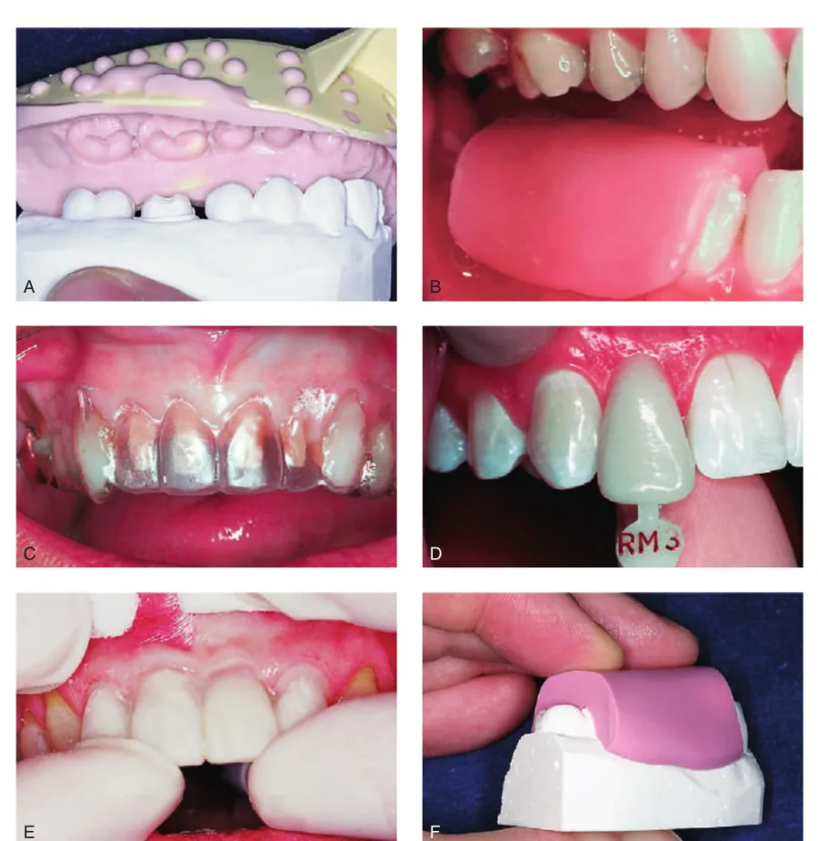

نسخه استخراجشده؛ ترجمه یا تأیید علمی انجام نشده است. وضعیت: captured
ساختار مفهومی قالب موقت: «تکنیک متعارف مستلزم آن است که یک تمپلیت ساخته شود که مادهی پلاستیک یا ستنشده در آن تزریق، ریخته یا فشرده میشود. تمپلیت از دو بخش مرتبط ساخته میشود: یکی کانتور خارجی روکش یا پروتز را میسازد، دیگری سطوح تراشیدهی دندان و — در صورت وجود — ناحیهی تماس ریج بیدندان را.» اینها همان ESF (فرم سطح خارجی) و PSF (فرم سطح تراش)اند.
و ESF اختصاصی چیست: «یک بازتولید منفی از دندانهای بیمار پیش از تراش، یا از یک کست تشخیصی که با واکس دستی یا دیجیتال اصلاح شده.» و مواد رایجش: «هیدروکلوئید برگشتناپذیر، سیلیکون افزایشی (بادی سنگین یا پاتی)، و ورقهای ترموپلاستیک.»
و مزیت پنهان سیلیکون افزایشی: «هزینهی بالاترش ممکن است با توانایی نگهداری برای استفادهی احتمالی مجدد در هر جلسهی آینده جبران شود.» و یک کاربرد افزوده: «این قالب پیش از عمل میتواند به آزمایشگاه فرستاده شود و راهنمای عالیای برای کانتورهای اگزیال دندان فراهم کند.»
و یک ترفند نشست بهتر: «نشاندن دوبارهی دقیق ESF آسانتر است، و حفرهی قالب نتایج بهتری میدهد، اگر نواحی نازک مادهی قالبگیری — که ممکن است بیندندانی یا پیرامون لبهی لثهای یافت شوند — تریم شوند.»
و چرا پاتی محبوب است: «میتواند بدون تری استفاده شود، بهآسانی با چاقوی تیز به حداقل اندازه تریم شود یا حتی بهصورت دیجیتال چاپ شود، و انعطافپذیریاش برداشتن بعدی رزین پلیمریزهشده را تسهیل میکند.»
و ورق ترموپلاستیک: «گرم و با خلأ یا فشار هوا روی کست استون آداپت میشود» و «فرمی شفاف با دیوارههای نازک» میسازد، که «در تکنیک مستقیم به دلیل تداخل حداقلی با اکلوژن مزیت دارد» — بیمار بهآرامی در حداکثر بینکاسپی میبندد و «تلاش افزودهی اندکی برای تنظیم تماسهای اکلوزال لازم است».
ولی همان نازکی، یک خطر است: «ماده دفعکنندهی ضعیف گرمای آزادشده حین پلیمریزاسیون رزین است، و بنابراین اگر رزین PMMA خودپلیمریزه استفاده میشود، باید دقت شود پیش از آنکه آسیب حرارتی بالقوه رخ دهد از دهان خارج گردد.»
و مشخصات ورق: «ورقهای شفاف در استات سلولز یا پلیپروپیلن در اندازهها، شکلها و ضخامتهای گوناگون در دسترساند؛ ورق ۰٫۵ میلیمتری (۰٫۰۲۰ اینچ) برای ساخت ترمیمهای موقت توصیه میشود. پلیپروپیلن ترجیح دارد چون جزئیات سطحی بهتری تولید میکند و مقاومتر به پارگی است» — و مقاومت بهتر به پارگی «برداشتن اولیه از کست شکلدهنده را کمملالتر میکند و اجازه میدهد ESF بیش از یک بار استفاده شود».
و روکشهای پیشساخته — با یک بازتعریف مهم: «نوع عمومی پیشساخته بهندرت الزامات یک ترمیم موقت را برآورده میکند، ولی میتوان آنها را بهعنوان ESF در نظر گرفت نه بهعنوان ترمیمهای تمامشده، و بنابراین باید با رزین خودپلیمریزه لاین شوند.» و نوع دیجیتال: «شلهای طراحی و تولیدشدهی دیجیتال (CAD-CAM) معمولاً بخشی از یک طرح درمان خوباندیشیدهشدهاند، و آنها هم باید برای تطابق اختصاصی لاین شوند.»
و اصلاحهایی که فرم پیشساخته لازم دارد: بیشتر فرمهای روکش افزون بر لاینینگ به اصلاح نیاز دارند: ریلیف داخلی، ونتینگ، کانتوردهی مجدد اگزیال و تنظیم اکلوزال. وقتی اصلاح گسترده لازم است، ESF اختصاصی یا دیجیتال برتر است، چون زمان کمتری میبرد و اقتصادیتر است.
و هشدار پلیکربنات و شل فلزی: پلیکربنات «طبیعیترین ظاهر را در میان همهی مواد پیشساختهی عمومی» دارد و «در انواع انسیزور، کانین و پرمولر» عرضه میشود. ولی برای شل فلزی: «باید دقت شود از شکستن فینیشلاین ظریف کاووسورفیس تراش هنگام جا زدن فرم روکش فلزی جلوگیری شود. این خطر بیشتر است اگر آداپتاسیون مستلزم آن باشد که بیمار با نیرو روی شل روکش ببندد — لبهی شل میتواند لبه را درگیر و آن را زیر فشار گاز شکستن دهد.»
و استیل ضدزنگ: «عمدتاً برای کودکان با دندانهای شیری بهشدت تخریبشده استفاده میشود. در آن کاربرد با رزین لاین نمیشوند بلکه تریم، با انبر کانتوردهنده آداپت، و با سمان با استحکام بالا لوت میشوند.» و مزیت جنس: «استیل ضدزنگ بسیار سخت است و بنابراین میتواند برای ترمیمهای موقت طولانیمدتتر به کار رود.»

سه دستهی PSF: «غیرمستقیم (قالب برای روش آزمایشگاهی لازم است) و مستقیم (روش داخلدهانی). دستهی سوم، غیرمستقیم-مستقیم، اعمال متوالی این دوست.» و یک الزام مشترک: «همهی روشها معمولاً یا به روش لاینینگ یا به روش ریمارجینیشن نیاز دارند، به دلیل محدودیتهای مواد درگیر.»
و مهمترین جنبه، مستقل از تکنیک: «یکی از مهمترین جنبههای ساخت روکش موقت، صرف نظر از تکنیک، دسترسی به خطوط پایان تراش است. اگر اینها قابل رؤیت یا در دسترس نباشند، ترمیمها محافظت پالپی یا پریودنتالی مورد نیاز را فراهم نخواهند کرد.» و ابزارش: «در بیشتر موارد، نخ جابهجاکننده برای نمایان کردن درست فینیشلاین تراش لازم است.»
و خطر مونومر آزاد در تکنیک مستقیم: «تماس مونومر آزاد با تراشها یا لثه ممکن است آسیب و واکنش آلرژیک یا حساسسازی ایجاد کند.» و یک عدد نگرانکننده: در بیمارانی که پیشتر با تست پچ مونومر مواجه شده بودند، ۲۰ درصد بروز حساسیت آلرژیک گزارش شده است. و شکل بروزش: «در بیماران آلرژیک، مواجهه حتی با مقادیر اندک مونومر معمولاً به زخم دردناک و استوماتیت میانجامد.»
و اعداد گرمایی — مهمترین بخش این درس: «رزین بیسآکریل گرمای بسیار کمتری از PMMA تولید میکند.» و در آزمایشگاه: «مطالعات آزمایشگاهی افزایش دمای اوج حدود ۱۰ درجهی سانتیگراد را در حفرههای پالپ دندانهای تراشیدهشدهای که روی آنها ترمیم موقت PMMA مستقیم ساخته شده بود نشان دادهاند. آن مقدار افزایش دما قادر به ایجاد آسیب برگشتناپذیر به پالپ است.»
و سه عامل که ارتفاع دما را تعیین میکنند: «افزایش دما مستقیماً به نوع و حجم رزین موجود بستگی دارد. بنابراین ترمیمی که مستقیماً با یک پانتیک بزرگ ساخته شود محتملتر است آسیب بزند تا ترمیمی برای یک روکش تکی» — بهویژه اگر دندان محافظهکارانه تراشیده شده باشد. و عامل سوم: «خواص هدایت گرمایی ESFها بهطور معناداری بر ارتفاع ممکن دما اثر میگذارند.»
و نکتهای که همهی نگرانی را قابل مدیریت میکند — زمان: «دماهای اوج تا زمانی که ۷ تا ۹ دقیقه سپری شود به دست نمیآیند.» و به همین دلیل و نیز به این دلیل عملی که «باید از میان زیرکاتهای سطوح پروگزیمال دندانهای مجاور کشیده شود»، «رزین باید در مرحلهی لاستیکی پلیمریزاسیون برداشته شود، که معمولاً ۲ تا ۳ دقیقه پس از قرار دادن در دهان رخ میدهد». و نتیجه: «افزایش دما در ۳ دقیقه ناچیز است، که نشان میدهد آسیب حرارتی بهآسانی قابل اجتناب است.»
و یک مبادلهی مهم که در جهت مخالف عمل میکند: «تطابق لبهای ترمیمهای موقتی که بدون مزاحمت روی کستهای استون پلیمریزه شدهاند، بهطور معناداری بهتر از ترمیمهایی است که پیش از صلب شدن از دهان خارج شدهاند.» و دو دلیلش: «(۱) استون انقباض رزین را حین پلیمریزاسیون محدود میکند و (۲) جدا کردن رزین از دندان در فاز لاستیکی تغییر شکل ایجاد میکند.»
و نتیجهاش برای کیسهای بزرگ: «پروتزهای پارسیل ثابت با دهانهی بلند یا چند-اباتمنتی که مستقیماً ساخته شوند، محتمل است اختلاف لبهای غیرقابل قبولی به دلیل انقباض و تغییر شکل داشته باشند و باید ریمارجینیت شوند.»
و مبادلهی تکنیک مستقیم بهطور خلاصه: مزایا — «استفاده از مواد کمتر، که کارایی را بهبود میدهد» و شاید تطابق بهتر بسته به دقت مواد روش غیرمستقیم. معایب — «با PMMA یا پلی-R متاکریلات خودپلیمریزه، تروما به بافت از رزین در حال پلیمریزه شدن و تطابق لبهای ذاتاً ضعیفتر».
و دربارهی بیسآکریل: «کمتر منقبض میشود و گرمای کمتری تولید میکند، ولی ممکن است استحکام خمشی PMMA را فراهم نکند.» و یک قاعدهی عمومی: «بیشتر موادی که فرایند پلیمریزاسیون را طی میکنند درجهای از انقباض دارند و معمولاً به یک ریلاین برای بهینه کردن تطابق لبهای نیاز دارند.»
و روش غیرمستقیم-مستقیم: دندانها «عمداً کمتراش» روی کست تشخیصی یا فایل دیجیتال آماده میشوند تا شل ساخته شود؛ «ضخامت شل با میزان کمتراشی عمدی کنترل میشود». و جزء مستقیمش: «لاین کردن شل بهصورت داخلدهانی پس از تراش دندان برای تطابق اختصاصی».
و مبادلهاش: «زمان صندلی را کاهش میدهد ولی زمان آزمایشگاهی را برای کسی در مطب افزایش میدهد.» و دو مزیت مادی: «اگر PMMA استفاده شود، حجم رزین کاهش مییابد و بدین ترتیب تولید گرما از واکنش گرمازا به حداقل میرسد»؛ و اگر پروتز پارسیل ثابت ساخته شود، «هیچ تماسی میان مونومر و بافت نرم در ناحیهی پانتیک نخواهد بود، که خطر واکنش آلرژیک را کم میکند».
و کجا موقت هنوز لازم است: CAD-CAM در بسیاری از موارد نیاز به موقت را از میان برده، چون ترمیم دائمی را میتوان همان روز ساخت؛ ولی نه در بازسازیهای بزرگ، ارزیابی تغییر اکلوژن در حضور اختلال گیجگاهی-فکی، تغییر برنامهریزیشدهی بعد عمودی، و دورهی بهبود محل پانتیک یا ایمپلنت. در این موقعیتها دندانپزشک و بیمار پیش از ساخت ترمیم دائمی، راحتی، عملکرد و ظاهر را ارزیابی میکنند.
و CAD-CAM: «فرایند CAD-CAM مواجههی بیمار با مواد شیمیایی را بهشدت کاهش میدهد، چون بلانکهای تولیدشدهی تجاری تنها حدود ۱ درصد مونومر آزاد باقیمانده دارند.
بنابراین روش دیجیتال ساخت روکش موقت، یک روش کاملاً غیرمستقیم است.» و برتریاش: «ترمیمهای موقت CAD-CAM قویتر و دقیقتر از پروتزهای کامپوزیت بیسآکریل سنتی نشان داده شدهاند.» و مزیت دادهای: «فایل داده میتواند برای فرز کردن ترمیم دائمی استفاده شود اگر تراشها و کانتورهای بافتی تغییر نکرده باشند.»
و یک محدودیت عملی CAD-CAM: «وقتی ترمیمهای بزرگ چندواحدی برنامهریزی شدهاند، دندانپزشک احتمالاً باید از آزمایشگاهی با فرز تجاری بزرگ کمک بگیرد، چون بلوکهای فرزهای درونمطبی عموماً برای ترمیمهای بزرگتر از پنج واحد بیش از حد کوچکاند.» و یک پرسش که باید از سازنده پرسید: «مواد مناسب برای ریلاین کردن یک ترمیم موقت فرزشده، تا دلامیناسیون، جدایش یا نشت میان مادهی فرزشده و مادهی ریلاین رخ ندهد.»